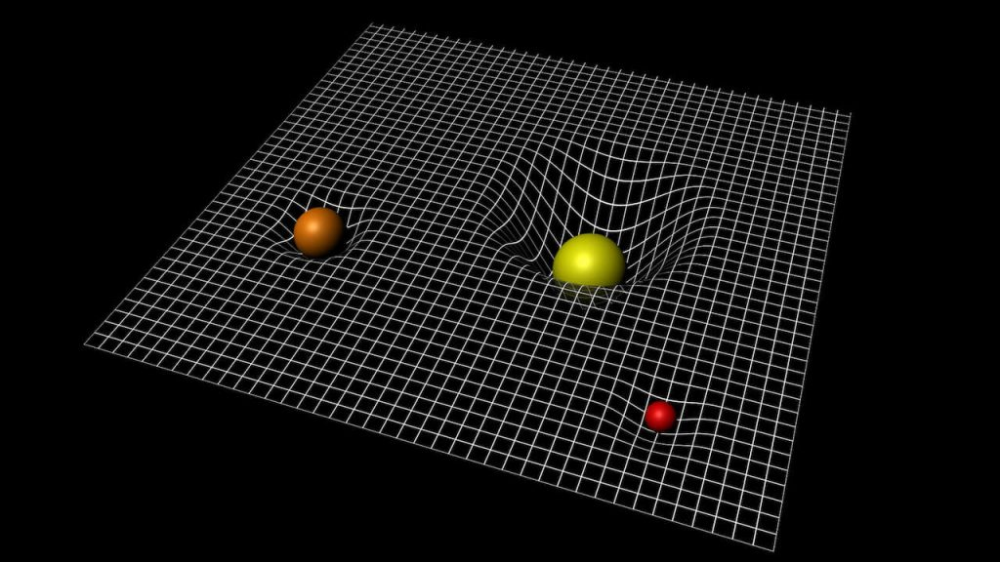

ကျွန်တော်တို့ ပတ်ဝန်းကျင်မှာ ရှိတဲ့ အရာ ဝတ္ထုတွေရဲ့ အချင်းချင်း ဆွဲငင်အားဟာ အရမ်းကို အားနည်းပါတယ်။ အဓိက ကျွန်တော်တို့ သတိထား မိလောက်အောင် ဆွဲငင်အား ကောင်းတာ ဆိုလို့ ကမ္ဘာ မြေကြီးရဲ့ ဆွဲငင်အားပဲ ရှိပါတယ်။ ဒါပေမယ့် ဒီလို အား ခပ်ပြော့ပြော့ ဆွဲငင်အား ကပဲ ကြယ်တွေ၊ ဂြိုဟ်တွေ နဲ့ ဂလက်ဆီ တွေကို အင်အားကောင်းကောင်းနဲ့ ချည်နှောင်ထားတဲ့ အားဖြစ်နေ ပြန်ပါတယ်။
Gravity ဆိုတဲ့ ဆွဲငင်အားဟာ ရူပဗေဒ ရဲ့ အခြေခံ အား ၄ မျိုးထဲမှာ ပထမဆုံး ရှာဖွေ တွေ့ရှိခဲ့တဲ့ အား (Force) ဖြစ်ပါတယ်။ ရူပဗေဒ ဘာသာ သင်တဲ့ သူတွေ ပထမဆုံး စတင် မိတ်ဆက်တဲ့ ‘အား’ လဲ ဖြစ်ပါတယ်။
ဒါပေမယ့် ဆွဲငင်အား ရဲ့ သဘောသဘာဝနဲ့ ပါတ်သက်လို့ အခုထိ ရူပဗေဒ ပညာရှင်တွေဟာ သေသေချာချာ နားလည်လှ သေးတာတော့ မဟုတ်ပါဘူး။ ပြောရရင် ရူပဗေဒရဲ့ အခြေခံ အား ကြီး ၄ မျိုးထဲမှာ ဆွဲငင်အားဟာ နားလည်ဖို့ အခက်ဆုံး အား ဖြစ်နေဆဲ ဖြစ်ပါတယ်။
ဒီလိုပြောလို့ မိတ်ဆွေ စောဒက တက်ချင် လာပါလိမ့်မယ်။ ဘာလို့ဆို ဆွဲငင်အားရဲ့ သက်ရောက်မှုကို ပတ်ဝန်းကျင်မှာ ထင်ထင်ရှားရှား မြင်နေရ တာပဲ မဟုတ်လား။ သစ်ပင် ပေါ်က ပန်းသီး ကြွေကျတယ်။ လက်ထဲက ပန်းကန် လွတ်ပြီး ကျကွဲသွားတယ်။ ကောင်းကင်ပေါ် ပစ်တင်လိုက်တဲ့ ကျောက်ခဲ ဟာ ဆွဲငင်အား ကြောင့်ပဲ အောက်ကို ပြန်ပြုတ်ကျလာတယ်။ ရှင်းနေတာပဲ မဟုတ်ဘူးလား။
ကျွန်တော်တို့တွေ ကမ္ဘာမြေကြီးနဲ့ ကပ်နေပြီး အာကာသထဲ လွင့်မထွက် သွားတာလဲ ဆွဲငင်အား ကြောင့်ပဲလေ။ လ က ကမ္ဘာကို ပတ်နေတယ်။ ကမ္ဘာက နေကို ပတ်နေတယ်။ ဒါတွေ အားလုံး ဆွဲငင်အားကြောင့် မဟုတ်ရင် ဘာကြောင့်လဲဗျာ။
ဒါတွေ အားလုံး ဟုတ်ပါတယ်။ ဒါပေမယ့် တကယ်တမ်း ရူပဗေဒ ပညာရှင်တွေက ဆွဲငင်အား ဆိုတာ ဘာလဲလို့ သိရအောင် အသေးစိတ် လေ့လာ ကြည့်တဲ့အခါ ဒီ “ဆွဲငင်အား” ဆိုတာ တကယ် ရှိမနေဘူး ဆိုတာ တွေ့လာရပါတယ်။
ဆွဲငင်အားနဲ့ ပါတ်သက်လို့ ကျွန်တော်တို့ နားလည်အောင် ရှင်းပြခဲ့တဲ့ အဓိက ပညာရှင် နှစ်ဦးကတော့ နယူတန် နဲ့ အိုင်းစတိုင်း တို့ပဲ ဖြစ်ပါတယ်။ သူတို့ နှစ်ယောက်ရဲ့ ဆွဲငင်အား အပေါ် မြင်တဲ့ အမြင်ကလဲ မတူပါဘူး။
နယူတန်ရဲ့ ဆွဲငင်အား သီအိုရီဟာ ပြဿနာ အားလုံးကိုလဲ ပြေလည်အောင် ဖြေရှင်းပေး နိုင်စွမ်း မရှိပါဘူး။ ဥပမာ ဗုဒ္ဓဟူး ဂြိုဟ် (မာကျူရီ) ရဲ့ ပုံမှန် မဟုတ်တဲ့ ပတ်လမ်း ဘာ့ကြောင့် ဖြစ်နေရတာလဲ ဆိုတာကို ပြေလည်အောင် မရှင်းပြနိုင် ပါဘူး။
မာကျူရီဟာ နေနဲ့ အရမ်း နီးကပ်စွာ ပတ်နေတဲ့ လမ်းကြောင်းဟာ နယူတန်ရဲ့ နိယာမနဲ့ တွက်ချက်လို့ ရတဲ့ လမ်းကြောင်းကနေ သွေဖီ နေပါတယ်။
၁၉ ရာစု နှစ်လယ် လောက်ကစလို့ နက္ခတ် ပညာရှင် တွေဟာ မာကျူရီ ထက် နီးတဲ့ ပါတ်လမ်းကနေ ပါတ်နေတဲ့ ဂြိုဟ်တစ်စင်း ရှိမယ်လို့ ယုံကြည် ခဲ့ကြပါတယ်။ ဒီ ဂြိုဟ်ကို Vulcan ဂြိုဟ် လို့ အမည် ပေးထားခဲ့ပါတယ် (Star Trek ရုပ်ရှင် ကြည့်ဖူးတဲ့ သူတွေ ကြားဖူး ကြမှာပါ။) ဆယ်စုနှစ် ပေါင်းများစွာ ဒီဂြိုဟ်ကို ရှာဖွေဖို့ ကြိုးစား မှုတွေဟာ မအောင်မြင် ခဲ့ပါဘူး။
ဒါဆို နယူတန် ရဲ့ ဆွဲငင်အား သီအိုရီမှာ ဘာတွေ ချို့ယွင်း နေသလဲ။ သူ့ သီအိုရီ နဲ့ အိုင်းစတိုင်းရဲ့ သီအိုရီ ဘာတွေ ကွာနေ သလဲ။
နယူတန်နှင့်အိုင်းစတိုင်း – ဆွဲငင်အားသီအို
အိုင်းစတိုင်း ရဲ့ ဆွဲငင်အား သီအိုရီကို အများက အထွေထွေ နှိုင်းရ သီအိုရီ (General Theory of Relativity) လို့ လူသိ များပါတယ်။ ဒီ သီအိုရီရဲ့ ဆွဲငင်အားနဲ့ ပါတ်သက်တဲ့ အခြေခံ အယူအဆ တွေဟာ နယူတန် ရဲ့ ဆွဲငင်အား သီအိုရီရဲ့ ယူဆချက် တွေနဲ့ သိသိသာသာ ကွာခြား နေပါတယ်။ဆွဲငင်အားရဲ့ အလျင်
အိုင်းစတိုင်းရဲ့ ဆွဲငင်အား သီအိုရီ ရဲ့ အဓိက အရေးပါတဲ့ အခြေခံ အချက်တစ်ခုကတော့ စကြာဝဠာရဲ့ အမြန်နှုန်း ကန့်သတ်ချက် (Cosmic Speed Limit) ဖြစ်တဲ့ အလင်းအလျင် ကို အခြေခံ တစ်ခု အနေနဲ့ ထည့်သွင်း စဉ်းစား ထားတာပဲ ဖြစ်ပါတယ်။နယူတန်ရဲ့ အယူအဆ အရ ဒြပ်ရှိတဲ့ အရာဝတ္ထု တစ်ခုရဲ့ ဆွဲအားကို စကြာဝဠာ အတွင်း နေရာ တိုင်းကနေ ချက်ချင်း ခံစား ရမယ်လို့ ဆိုပါတယ်။ တနည်းအားဖြင့် ဆွဲငင်အားရဲ့ အလျင်ဟာ အနန္တ အလျှင် ရှိတယ်လို့ ယူဆပါတယ်။
နယူတန်ရဲ့ အယူအဆ အရ အကယ်လို အခုအချိန်မှာ ရုတ်တရက် ကျွန်တော်တို့ရဲ့ နေ ပျောက်ဆုံးသွားမယ်ဆို နေက ကျွန်တော်တို့ ကမ္ဘာကို ဆွဲထားတဲ့ ဆွဲငင်အား ကလဲ ချက်ချင်း ပျောက်ဆုံးသွားမှာ ဖြစ်ပါတယ်။ ဒါ့ကြောင့် နေ ပျောက်ဆုံးသွားတာနဲ့ တချိန်ထဲမှာ ကမ္ဘာကို ဆွဲထားတဲ့ ဆွဲငင်အားလဲ ရုတ်တရက် ပျောက်ဆုံးသွားမှာ ဖြစ်လို့ ကမ္ဘာဟာ တမုဟုတ်ချင်း အာကာသ ထဲကို လွင့်ထွက်သွားမှာ ဖြစ်ပါတယ်။
အိုင်းစတိုင်းကတော့ ဒီလို မယူဆ ပါဘူး။ အထွေထွေ နှိုင်းရ သီအိုရီ (General Relativity) အရ စကြာဝဠာ အတွင်းမှာ ဘယ်အရာမှ အလင်းထက် မြန်အောင် မသွားနိုင်ပါဘူး။ ဒါ့ကြောင့် ဆွဲငင်အား ဟာလဲ အလင်းအလျင်အတိုင်း သွားမယ်လို့ သူက တွေးဆပါတယ်။
နေကနေ ကမ္ဘာကို အလင်းရောင် ရောက်ဖို့ဆို ၈ မိနစ် ခွဲခန့် ကြာမှာ ဖြစ်ပါတယ်။ ဒါ့ကြောင့် အိုင်းစတိုင်းရဲ့ အယူအဆ အရဆို အကယ်လို့ နေသာ ရုတ်တရက် ပျောက်ဆုံးသွား ခဲ့ရင် ကမ္ဘာဟာ သူ့ မူလ ပတ်လမ်း အတိုင်း နောက်ထပ် ၈ မိနစ် ခွဲခန့် ဆက်ပြီး ပတ်နေဦးမှာ ဖြစ်ပါတယ်။
နေ ပျောက်ဆုံးသွားပြီး ၈ မိနစ် ကျော်ခန့် ကြာတော့မှ နေဆွဲအား ပျောက်ဆုံးသွားတာကို ကမ္ဘာက ခံစားရမှာ ဖြစ်ပါတယ်။ ဒါ့ကြောင့် ဒီ အချိန်ကျမှ ကမ္ဘာဟာ မူလ လမ်းကြောင်းကနေ အာကာသ ထဲကို လွင့်စဉ် ထွက်သွားမှာ ဖြစ်ပါတယ်။
ဆွဲငင်အား ဖြစ်ပေါ်လာပုံ
နယူတန် နဲ့ အိုင်းစတိုင်းရဲ့ ဆွဲငင်အားနဲ့ ပါတ်သက်တဲ့ အယူအဆ ကွာခြားချက် နောက်တစ်ချက် ကတော့ ဆွဲငင်အား ဖြစ်ပေါ်လာ ပုံနဲ့ ပါတ်သက်တဲ့ ယူဆချက် ဖြစ်ပါတယ်။နယူတန်က ဆွဲငင်အား ဆိုတာ ဒြပ်ထု (mass) ကြောင့် ဖြစ်တယ်လို့ ယူဆပါတယ်။ ဒြပ်ထု ရှိတဲ့ အရာ မှန်သမျှဟာ ဆွဲငင်အား ရှိပြီး ဆွဲငင်အားရဲ့ သက်ရောက်မှု ကိုလဲ တန်ပြန် ခံကြရ ပါတယ်။

သူ့ အယူအဆ အရ ဒြပ်ထု (mass) ဟာ စွမ်းအင်ရဲ့ အသွင် တစ်မျိုးသာ ဖြစ်တယ်လို့ ဆိုပါတယ်။ ဒါ့ကြောင့်လဲ E = mc^2 လို့ ပြောတာပေါ့။ ဒီ နာမည်ကျော် ဖော်မြူလာက အတည် စွမ်းအင် (Rest Energy) နဲ့ ဒြပ်ထု တို့ရဲ့ ဆက်သွယ်ချက်ကို ဖော်ပြ ပေးထားတာ ဖြစ်ပါတယ်။
ဒီ အယူအဆ အရ စွမ်းအင် အားလုံးမှာ ဆွဲငင်အား ရှိတယ်လို့ ဆိုပါတယ်။ ဒါ့ကြောင့် စွမ်းအင် အသွင် အားလုံးဟာ ဆွဲငင်အားရဲ့ သက်ရောက်မှုကိုလဲ ခံကြရ ပါတယ်။ ဥပမာ အလင်းဟာ ဆွဲငင်အားကြောင့် ယိုင်သွားတာ မျိုးပေါ့။
နောက် အရေးအကြီးဆုံး အချက်က ဆွဲငင်အား (Gravity) ကိုယ်နှိုက်က စွမ်းအင် တစ်မျိုး ဖြစ်တာမို့ ဆွဲငင်အား အရမ်းကောင်းတဲ့ ရပ်ဝန်းတွေမှာ ဒီ ဆွဲငင်အား ကြောင့်ပဲ ဆွဲငင်အား အသစ် ဖြစ်ပေါ်လာ မယ်လို့ အိုင်းစတိုင်းက ယူဆပါတယ်။
ဒါ့ကြောင့် နေနဲ့ အရမ်း နီးကပ်တဲ့ နေရာမှာ ဆွဲငင်အား များတာမို့ ဒီဝန်းကျင်မှာ ဆွဲငင်အား အသစ်တွေ ဖြစ်ပေါ် လာရပါတယ်။ ဒါ့ကြောင့် ဒီ ဆွဲအားရပ်ဝန်းထဲ ရောက်နေတဲ့ မာကျူရီ ဂြိုဟ်ဟာ ပုံမှန် နေရဲ့ ဒြပ်ထုကြောင့် ဖြစ်တဲ့ ဆွဲငင်အား (နယူတန်ရဲ့ ဖော်မျူလာနဲ့ တွက်လို့ရတဲ့ ဆွဲအား) အပြင်ကို ဒီ ပြင်းထန်တဲ့ ဆွဲငင်အားကြောင့် အသစ်ဖြစ်ပေါ်လာတဲ့ အပို ဆွဲငင်အားရဲ့ သက်ရောက်မှုကိုလဲ ခံနေရပါတယ်။
ဒါ့ကြောင့် မာကျူရီရဲ့ ပတ်လမ်းဟာ နယူတန်ရဲ့ ဖော်မျူလာနဲ့ တွက်လို့ရတဲ့ ပါတ်လမ်းကနေ သွေဖီနေ ရတာ ဖြစ်တယ်လို့ အိုင်းစတိုင်းက ရှင်းပြပါတယ်။
သူ့ရဲ့ ရှင်းပြချက်ကို သင်္ချာနည်းနဲ့ တွက်ချက် ကြည့်ရာမှာလဲ မာကျူရီ ဂြိုဟ်ရဲ့ ပုံမှန် မဟုတ်တဲ့ ပါတ်လမ်းကို အတိအကျ တွက်ချက် နိုင်တာ တွေ့ကြရ ပါတယ်။
မာကျူရီမှ မဟုတ်ပါဘူး။ အခြား ကြယ်တွေကို နီးကပ်စွာ ပါတ်နေတဲ့ ဂြိုဟ်တွေရဲ့ ပါတ်လမ်းတွေကို တွက်ချက် ရာမှာလဲ နယူတန်ရဲ့ ဖော်မျူလာနဲံ မှန်ကန်စွာ မတွက်နိုင်ပဲ အိုင်းစတိုင်းရဲ့ ဖော်မျူလာနဲ့ တွက်မှသာ မှန်ကန်တာကို တွေ့ကြရ ပါတယ်။
ပညာရှင် တွေကတော့ မာကျူရီ ဂြိုဟ်ရဲ့ ပုံမမှန်တဲ့ ပါတ်လမ်းကို မှန်ကန်စွာ တွက်ချက် ပေးနိုင်တာဟာ အိုင်းစတိုင်းရဲ့ ဆွဲငင်အား သီအိုရီရဲ့ အရေးပါတဲ့ အောင်မြင်မှု မှတ်တိုင် တစ်ခု ဖြစ်တယ်လို့ သတ်မှတ်ကြ ပါတယ်။
Reference: What’s the difference between Newton and Einstein gravity? | Sky Night Magazine